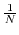

Next: Min and Max Value Up: Numeric Routines Previous: Numeric Routines
subroutine fftrc(in,out,sign,n)
subroutine fftcr(in,out,sign,n)
subroutine fftcc(in,out,sign,n)
These perform one-dimensional FFTs. In all cases, sign is the sign
of the exponent in the transform (i.e. a sign of -1 is conventionally
viewed as a forward transform), and n is a power of 2 giving the
length of the (full) sequence.  scaling is never performed
(it is up to you to scale at the best time). In is the input
array, and out is the output array. These routines
evaluate:
Miriad manager